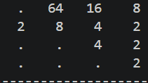
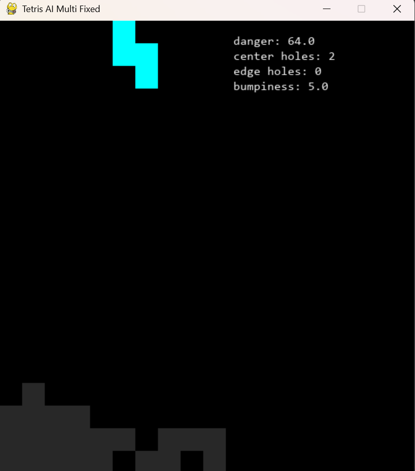

Python을 이용하여 2048 게임을 자동으로 플레이하는 인공지능 프로그램을 개발하였다. 게임 상태를 분석하고 최적의 방향을 선택하도록 알고리즘을 구현하였다. 또한 반복 학습을 통해 더 높은 점수를 얻을 수 있도록 개선하였다. 프로젝트를 진행하면서 자료구조와 탐색 알고리즘에 대한 이해를 높일 수 있었다.

Python과 Pygame을 이용하여 테트리스 게임을 제작하였다. 블록 회전, 충돌 판정, 줄 삭제 기능 등을 직접 구현하였다. 게임 속도 조절과 점수 시스템도 추가하여 실제 게임처럼 동작하도록 만들었다. 프로젝트를 진행하면서 게임 로직 설계와 이벤트 처리 방법을 배울 수 있었다.